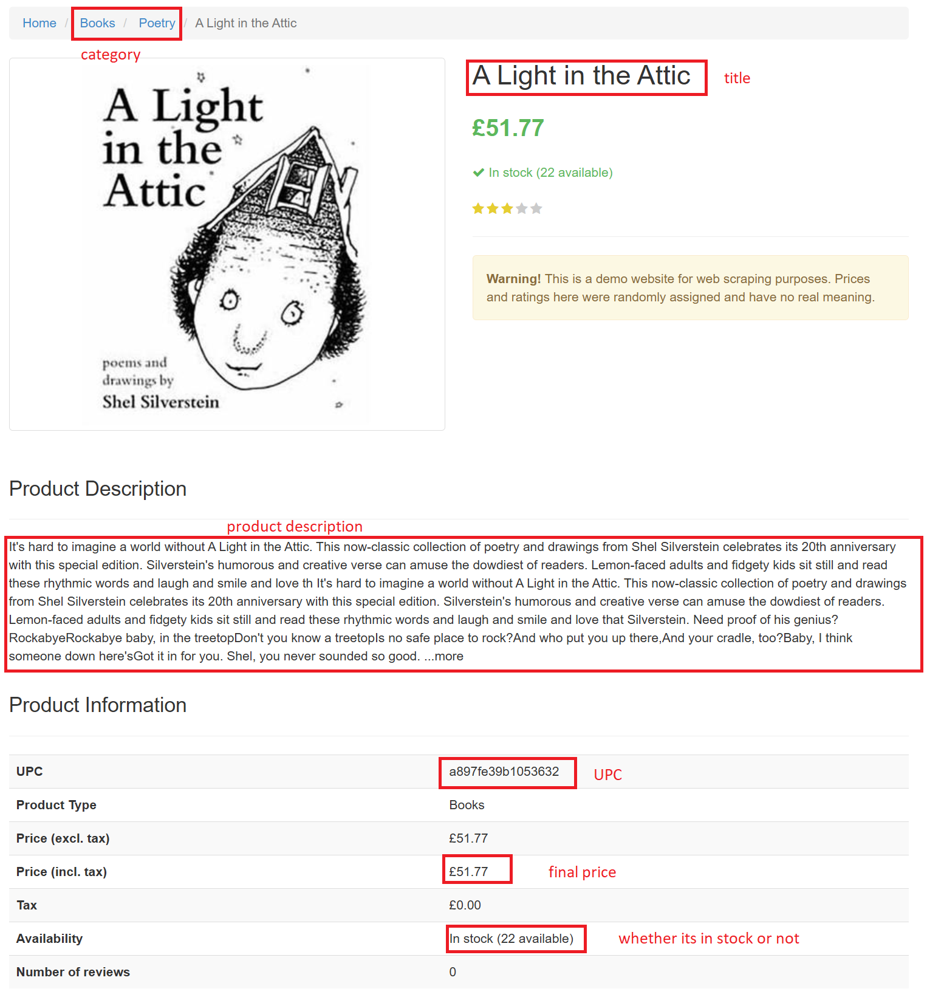

import time
import random
import json
from bs4 import BeautifulSoup
import requests
import pandas as pd
import mathWeb scraping example
Overview
Similar to other examples that we had in the course - this notebook will demo how to scrape Books to scrape - a fictional demo site that shows book prices and is designed for teaching web scraping! As it looks like a retailer website!
Can we scrape at all?
Before staring out - we normally check whether we can scrape the site. To validate whether this site allows scraping - let’s check this as well. This way we also demonstrate common steps: * Firstly we can check https://books.toscrape.com/robots.txt for the site - which does not exist! * Secondly we check the Terms and Conditions on the site - however this site does not have anything. Searching the internet tells us that this is a popular scraping sandbox for beginners!
Thus we can proceed!
Explore the site
First off - lets import the necessary things into the notebook
Then let’s set up the user agent that will be set up with the scraper request. We can build off what we saw in Session 10 for inspiration.
heads = {
'User-Agent':'ESCAP Webscraping RAP demo scraper 1.0',
'email': 'goussev.serge@gmail.com',
'Accept-Language': 'en-US, en;q=0.5'}
s = requests.Session()Scraping info on each individual book page
On each individual page, there are likely several categories that are of interest to us for consumer price statistics: * Product name * Product category * Product description * UPC * Final (post-tax) price * Whether the product is available or not

Below we will go through how to get all this information.
Exploring how to scrape the site
Scraping categories
# Specify the URL
shop_url = "https://books.toscrape.com/"
# Use the with clause we learned about (could also be done directly) to collect and parse the site
with s.get(shop_url, headers=heads) as res:
response = BeautifulSoup(res.text, "html.parser")Given the navigation we found previously (i.e. the side_categories div class), lets find all the categories:
# Focus just on the section we want
side_category_section = response.find("div", class_ = "side_categories")
# Isolate all the categories using the link tag as they will have a link
categories = side_category_section.find_all('a')
# Iterate through all the categories and save the link in a dictionary key-value pair assigned
# to the name of the category itself
dictionary_of_categories = {}
for category in categories:
dictionary_of_categories[category.text.strip()] = category.get('href')
# Now lets see what we were able to scrape
dictionary_of_categories{'Books': 'catalogue/category/books_1/index.html',
'Travel': 'catalogue/category/books/travel_2/index.html',
'Mystery': 'catalogue/category/books/mystery_3/index.html',
'Historical Fiction': 'catalogue/category/books/historical-fiction_4/index.html',
'Sequential Art': 'catalogue/category/books/sequential-art_5/index.html',
'Classics': 'catalogue/category/books/classics_6/index.html',
'Philosophy': 'catalogue/category/books/philosophy_7/index.html',
'Romance': 'catalogue/category/books/romance_8/index.html',
'Womens Fiction': 'catalogue/category/books/womens-fiction_9/index.html',
'Fiction': 'catalogue/category/books/fiction_10/index.html',
'Childrens': 'catalogue/category/books/childrens_11/index.html',
'Religion': 'catalogue/category/books/religion_12/index.html',
'Nonfiction': 'catalogue/category/books/nonfiction_13/index.html',
'Music': 'catalogue/category/books/music_14/index.html',
'Default': 'catalogue/category/books/default_15/index.html',
'Science Fiction': 'catalogue/category/books/science-fiction_16/index.html',
'Sports and Games': 'catalogue/category/books/sports-and-games_17/index.html',
'Add a comment': 'catalogue/category/books/add-a-comment_18/index.html',
'Fantasy': 'catalogue/category/books/fantasy_19/index.html',
'New Adult': 'catalogue/category/books/new-adult_20/index.html',
'Young Adult': 'catalogue/category/books/young-adult_21/index.html',
'Science': 'catalogue/category/books/science_22/index.html',
'Poetry': 'catalogue/category/books/poetry_23/index.html',
'Paranormal': 'catalogue/category/books/paranormal_24/index.html',
'Art': 'catalogue/category/books/art_25/index.html',
'Psychology': 'catalogue/category/books/psychology_26/index.html',
'Autobiography': 'catalogue/category/books/autobiography_27/index.html',
'Parenting': 'catalogue/category/books/parenting_28/index.html',
'Adult Fiction': 'catalogue/category/books/adult-fiction_29/index.html',
'Humor': 'catalogue/category/books/humor_30/index.html',
'Horror': 'catalogue/category/books/horror_31/index.html',
'History': 'catalogue/category/books/history_32/index.html',
'Food and Drink': 'catalogue/category/books/food-and-drink_33/index.html',
'Christian Fiction': 'catalogue/category/books/christian-fiction_34/index.html',
'Business': 'catalogue/category/books/business_35/index.html',
'Biography': 'catalogue/category/books/biography_36/index.html',
'Thriller': 'catalogue/category/books/thriller_37/index.html',
'Contemporary': 'catalogue/category/books/contemporary_38/index.html',
'Spirituality': 'catalogue/category/books/spirituality_39/index.html',
'Academic': 'catalogue/category/books/academic_40/index.html',
'Self Help': 'catalogue/category/books/self-help_41/index.html',
'Historical': 'catalogue/category/books/historical_42/index.html',
'Christian': 'catalogue/category/books/christian_43/index.html',
'Suspense': 'catalogue/category/books/suspense_44/index.html',
'Short Stories': 'catalogue/category/books/short-stories_45/index.html',
'Novels': 'catalogue/category/books/novels_46/index.html',
'Health': 'catalogue/category/books/health_47/index.html',
'Politics': 'catalogue/category/books/politics_48/index.html',
'Cultural': 'catalogue/category/books/cultural_49/index.html',
'Erotica': 'catalogue/category/books/erotica_50/index.html',
'Crime': 'catalogue/category/books/crime_51/index.html'}Fantastic! Appending each category to the site URL will give us a way how to navigate to the category!
We can also probably remove the index.html from the end of each as it is detrimental to the perfomance of the site.
Scaping the individual product page
# Scrape the main site URL + the category we want in the catagory of interest
category_url = "catalogue/mesaerion-the-best-science-fiction-stories-1800-1849_983/index.html"
with s.get(shop_url + category_url, headers=heads) as res:
response = BeautifulSoup(res.text, "html.parser")Get product (i.e. book) title
# get product/book name
response.title.text.split("|")[0].strip()'Mesaerion: The Best Science Fiction Stories 1800-1849'Get Product description
# description is challenging as it has no unique id or class, thus we could
# find the product description tab (which is the first sub-header class) and
# use the `find_next()` method to get to the description
print(response.find_all("div", class_="sub-header")[0].find_next('p').text)Andrew Barger, award-winning author and engineer, has extensively researched forgotten journals and magazines of the early 19th century to locate groundbreaking science fiction short stories in the English language. In doing so, he found what is possibly the first science fiction story by a female (and it is not from Mary Shelley). Andrew located the first steampunk short Andrew Barger, award-winning author and engineer, has extensively researched forgotten journals and magazines of the early 19th century to locate groundbreaking science fiction short stories in the English language. In doing so, he found what is possibly the first science fiction story by a female (and it is not from Mary Shelley). Andrew located the first steampunk short story, which has not been republished since 1844. There is the first voyage to the moon in a balloon, republished for the first time since 1820 that further tells of a darkness machine and a lunarian named Zuloc. Other sci-stories include the first robotic insect and an electricity gun. Once again, Andrew has searched old texts to find the very best science fiction stories from the period when the genre automated to life, some of the stories are published for the first time in nearly 200 years. Read these fantastic stories today!OUR OWN COUNTRY So mechanical has the age become, that men seriously talk of flying machines, to go by steam, --not your air-balloons, but real Daedalian wings, made of wood and joints, nailed to your shoulder, --not wings of feathers and wax like the wings of Icarus, who fell into the Cretan sea, but real, solid, substantial, rock-maple wings with wrought-iron hinges, and huge concavities, to propel us through the air. Knickerbocker Magazine, May 18 ...moreGet product information
As this is a table, there are 2 ways of getting this information, via BeautifulSoup and via pandas:
BeautifulSoup approach
# save the table into a dictionary
product_info = {}
# filter to the product page
product_page = response.find("article", class_="product_page")
# as this is the only table with rows, we can just get find all rows on the product page
rows = product_page.find_all('tr')
for row in rows:
# focus on each row's cells and then save the values
cells = row.find_all(['th', 'td'])
product_info[cells[0].text] = cells[1].text
# have a look at what we saved
product_info{'UPC': 'e30f54cea9b38190',
'Product Type': 'Books',
'Price (excl. tax)': '£37.59',
'Price (incl. tax)': '£37.59',
'Tax': '£0.00',
'Availability': 'In stock (19 available)',
'Number of reviews': '0'}pandas approach
all_tables = pd.read_html(shop_url + category_url)
all_tables[0]| 0 | 1 | |
|---|---|---|
| 0 | UPC | e30f54cea9b38190 |
| 1 | Product Type | Books |
| 2 | Price (excl. tax) | £37.59 |
| 3 | Price (incl. tax) | £37.59 |
| 4 | Tax | £0.00 |
| 5 | Availability | In stock (19 available) |
| 6 | Number of reviews | 0 |
# we can convert this to a dictionary by first setting the first
# column as the index and second by telling pandas to convert it to a dictionary
all_tables[0].set_index(0).to_dict()[1]{'UPC': 'e30f54cea9b38190',
'Product Type': 'Books',
'Price (excl. tax)': '£37.59',
'Price (incl. tax)': '£37.59',
'Tax': '£0.00',
'Availability': 'In stock (19 available)',
'Number of reviews': '0'}Putting it all together: scraping the whole site
Now that we’ve explored it all - we can put it together and create a scraper for the whole site!
However instead of trying to do everything in one long script, lets at least break it out into two jobs: 1. a script that checks the entire site and saves the URLs of each product that needs to be scraped, and 2. a script that uses the URL of the product by getting all product characteristics that need saving - and this we already did above!
Thus #1 is the main thing that we need to do - i.e. find all the product URLs
# Specify the URL
shop_url = "https://books.toscrape.com/"
# Use the with clause we learned about (could also be done directly) to
# collect and parse the site
with s.get(shop_url, headers=heads) as res:
response = BeautifulSoup(res.text, "html.parser")
# Get all categories
side_category_section = response.find("div", class_ = "side_categories")
# Isolate all the categories using the link tag as they will have a link
categories_found = side_category_section.find_all('a')
# Iterate through all the categories and inside each through each page
# to save the link of the product in a dictionary
dictionary_of_products = {}
for categories in categories_found:
# Since the 'Books' category is a catch-all, we want to skip it
if categories.text.strip() == 'Books':
continue
# For the category, create a dictionary to nest that will save the relevant info
dictionary_of_products[categories.text.strip()] = {}
# Save the URL of the category within this nested dictionary
dictionary_of_products[categories.text.strip()]['category_url'] = categories.get('href')[:-10]
# break
# Initiate an empty list of urls to scrape for the category
products_to_scrape_list = []
for i, each_category in enumerate(categories):
# get the category page
with s.get(shop_url + categories.get('href')[:-10], headers=heads) as res:
response = BeautifulSoup(res.text, "html.parser")
# Find the number of pages to iterate through:
number_of_products = response.find("form", class_="form-horizontal").text.strip().split(" ")[0]
# iterate through the list of pages
for page in range(0,math.ceil(int(number_of_products)/20)):
# as we start off scraping the category site anyway, then we don't need to scrape it again
# however if we are now on page 2, we haven't yet scraped it so we should
if page > 0:
category_url = categories.get('href')[:-10] + "page-{}.html".format(page+1)
with s.get(shop_url + category_url, headers=heads) as res:
response = BeautifulSoup(res.text, "html.parser")
# Find all the product pods on this page
products = response.find_all("article", class_="product_pod")
# Extract the first link (which happens to be the picture), although we can get the second link too
for product in products:
href = product.find('a').get('href')
products_to_scrape_list.append(shop_url+'catalogue'+product.find('a').get('href')[8:])
# Save the nominal number of products and the list of urls in the main dictionary
dictionary_of_products[categories.text.strip()]['nominal_number_of_products'] = number_of_products
dictionary_of_products[categories.text.strip()]['products_to_scrape_list'] = products_to_scrape_listGreat, so we’ve scraped the entire site - and saved the list of products into a list by category - in a dictionary called dictionary_of_products. Let’s check if there were no mistakes and that we actually saved 1000 product URLs
# do a little counter - starting with zero
counter = 0
# go through each category
for category in dictionary_of_products:
# and add to the counter the number of products
counter += len(dictionary_of_products[category]['products_to_scrape_list'])
# now display the total
counter1000# lets see what it looks like for one category (as it would be really busy if we looked at a few)
dictionary_of_products['Travel']{'category_url': 'catalogue/category/books/travel_2/',
'nominal_number_of_products': '11',
'products_to_scrape_list': ['https://books.toscrape.com/catalogue/its-only-the-himalayas_981/index.html',
'https://books.toscrape.com/catalogue/full-moon-over-noahs-ark-an-odyssey-to-mount-ararat-and-beyond_811/index.html',
'https://books.toscrape.com/catalogue/see-america-a-celebration-of-our-national-parks-treasured-sites_732/index.html',
'https://books.toscrape.com/catalogue/vagabonding-an-uncommon-guide-to-the-art-of-long-term-world-travel_552/index.html',
'https://books.toscrape.com/catalogue/under-the-tuscan-sun_504/index.html',
'https://books.toscrape.com/catalogue/a-summer-in-europe_458/index.html',
'https://books.toscrape.com/catalogue/the-great-railway-bazaar_446/index.html',
'https://books.toscrape.com/catalogue/a-year-in-provence-provence-1_421/index.html',
'https://books.toscrape.com/catalogue/the-road-to-little-dribbling-adventures-of-an-american-in-britain-notes-from-a-small-island-2_277/index.html',
'https://books.toscrape.com/catalogue/neither-here-nor-there-travels-in-europe_198/index.html',
'https://books.toscrape.com/catalogue/1000-places-to-see-before-you-die_1/index.html']}Perfect, the total is 1000, so we got all product URLs!
Conclusion
This notebook has demonstrated how to explore and parse the information on the site and get what we need. While we did not make a complex script that did everything all in one script, there is actually a very good reason – this script would be big, hard to code, hard to understand, and hard to debug as we’re likely to have mistakes. This would also make it a very RAP-unfriendly way to code. Thus we will see how the whole scraper can be developed to be more robust.